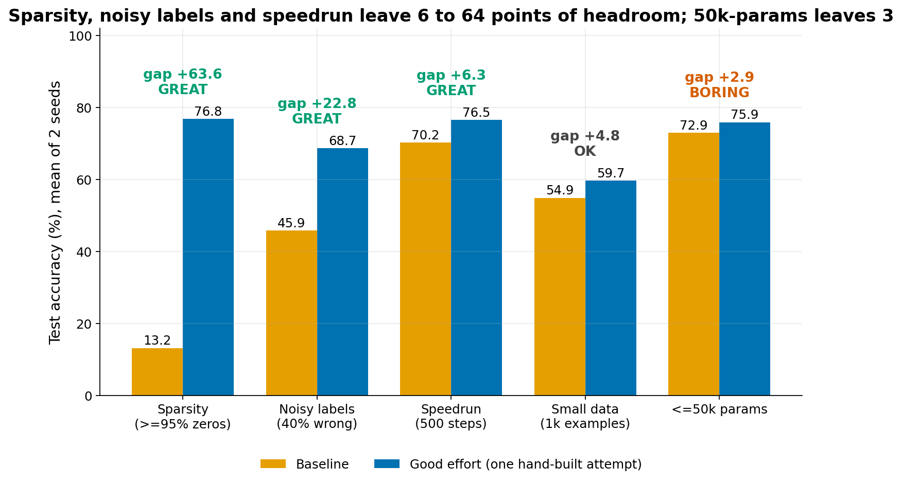
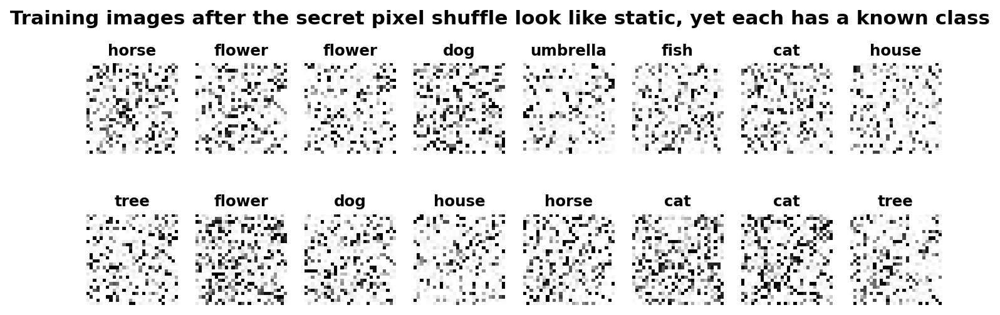
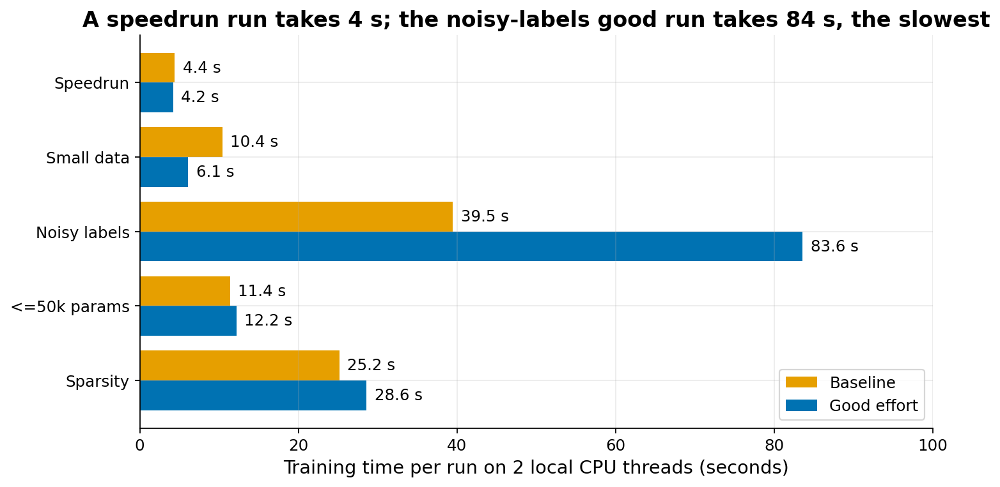

Competitions
The idea
Lab 1 uses the speedrun format. Lab 2 has no competition: its time goes to longer experiments and discussion. The formats below are the alternatives. All formats use the same hidden dataset. It is Quick Draw, Google's collection of 28x28 grey-scale drawings, restricted to 10 classes: cat, dog, horse, cow, bird, fish, house, tree, flower, umbrella. The animals are chosen on purpose because they are easy to confuse.
Before the files are given to students, two secret changes are applied. First, the 784 pixel positions are shuffled with one fixed random permutation, the same for training and test images. Second, a small amount of random noise is added to every pixel. The permutation does not hurt a plain MLP (a network of fully connected layers), because an MLP treats every pixel as an independent input and ignores where it sits. It does remove all benefit from convolutions and from pretrained image models. The noise stops students from finding the test images in the public Quick Draw files by exact match.
The students get train.npz (images and labels) and test.npz (images only). The test labels exist only on the server. In the prototype the test set has 10,000 images.
Scoring. Students submit one integer class (0 to 9) per test image. The server splits the test images into two halves. It scores the public half immediately and shows that score on a live leaderboard. The final ranking uses the private half only. Reason: with 5 to 10 submissions, a student can tune towards the public score. The private half is untouched by that tuning, so it measures real generalisation. The submission cap limits how much information about the public labels can leak through repeated probing.
What makes a format good for a 30-45 minute competition:
- Headroom: a baseline and a good solution must be several points apart, so that effort is rewarded. The prototype uses 3 points as the minimum.
- Many different tricks help. Students then try different things and have something to compare in the debrief.
- No single trick wins. If one line of code gives the whole gain, the leaderboard is decided in five minutes.
- Cheap to iterate: one training run must take seconds to a couple of minutes on a free Colab CPU.
The five formats
All accuracies are test accuracy on 10,000 hidden images, mean of 2 seeds,. "Good" is one hand-built attempt with almost no tuning, so a strong student may do better. The prototype lists the tricks that were in the good attempt, but it did not run each trick separately. So the size of each trick on its own is not known (see "What our prototype found").
1. Speedrun (used in Lab 1, optimization)
- Rule: train for at most 500 optimizer steps at batch size 128 on 50,000 training images. Steps are counted, not seconds, so a slow machine is not penalised.
- Baseline: MLP with two hidden layers of 256 units, Adam with learning rate 1e-3: 70.2%.
- Good attempt: 76.5% (+6.3). Tricks used together: a wider first hidden layer (512 instead of 256 units, about twice the parameters), standardising the inputs, He initialisation (weight scale chosen for ReLU), batch normalisation, AdamW (Adam with decoupled weight decay), a higher learning rate with a short warm-up and cosine decay.
- Course concept: Goodfellow ch 8: initialisation, adaptive learning rates, batch normalisation, learning-rate schedules.
- Assessment: Even a full-data MLP tops out near 76 to 77%, so the good attempt is already close to the ceiling. The spread shrinks if the step budget is raised. Raising the budget to about 1500 steps gives a one-minute run on Colab.
2. Noisy labels (alternative; generalisation)
- Rule: 20,000 training images, of which 40% have a wrong label (replaced by a different, uniformly random class). No clean validation set is given.
- Baseline: 2x256 MLP trained about 25 epochs with plain cross-entropy, which memorises the wrong labels: 45.9%.
- Good attempt: 68.7% (+22.8). Tricks used together: a wider first hidden layer (512 instead of 256 units), generalised cross-entropy (a loss that gives less weight to examples the model finds hard, so wrong labels pull less), early stopping on a validation split taken from the noisy data, weight decay, dropout, noise added to the inputs.
- Course concept: Goodfellow ch 7: early stopping, weight decay, dropout, noise injection, plus robust losses.
- Assessment: Biggest lesson and the clearest "why nets generalise" story. Because the noise is only in the training labels and no clean set is given, students cannot cheat with a clean validation set.
3. Sparsity (alternative)
- Rule: at least 95% of the weights of the submitted model must be exactly zero. Training data: 50,000 images.
- Baseline: train a dense 300-100 MLP, then set the 95% smallest weights to zero in one step with no further training: 13.2% (nearly chance, which is 10%). This baseline is deliberately weak. A student who prunes and then fine-tunes would land somewhere between the two numbers.
- Good attempt: 76.8% (+63.6). Gradual magnitude pruning: during training, every 100 steps the smallest weights are masked, following a cubic schedule that reaches 95% sparsity at 70% of training, then training continues. Inputs standardised.
- Course concept: Goodfellow ch 7 and 8 together: pruning as a form of regularisation, and the training schedule matters. Fits a lottery-ticket warm-up (the idea that a small sub-network found inside a big one can train as well as the whole).
- Assessment: The good run is already near the dense ceiling, so the top of the leaderboard will bunch together.
4. Small data
- Rule: only 1,000 training examples.
- Baseline: 2x256 MLP, 1500 steps at batch 64 (about 96 epochs), overfits: 54.9%.
- Good attempt: 59.7% (+4.8). A wider first hidden layer (512 instead of 256 units), dropout 0.5, weight decay, input noise, cosine decay, standardisation.
- Course concept: Goodfellow ch 7 (dropout, weight decay, noise).
- Assessment: Gains are small in absolute terms and sensitive to the random seed, so only the private half should be trusted. Runs are fast (6 to 10 s locally).
5. At most 50,000 parameters
- Rule: the model may have at most 50,000 parameters. Training data: 50,000 images.
- Baseline: one hidden layer of 60 units (47,710 parameters): 72.9%.
- Good attempt: 75.9% (+2.9; unrounded 72.93 to 75.86). Narrower and deeper net (56 then 32 units, 46,114 parameters), AdamW, cosine decay, input noise, standardisation.
- Course concept: Goodfellow ch 6 (network width and depth).
- Assessment: The gap is just under the 3-point bar, and the baseline is already close to the ceiling. It could serve only as a quick warm-up.
What our prototype found

Per-trick results (which trick gave how much) cannot be shown. Each good attempt was run as one bundle of tricks, with one baseline run per format. Re-running each trick alone would answer this question and is cheap for speedrun (4 s per run), but it was not done here.

